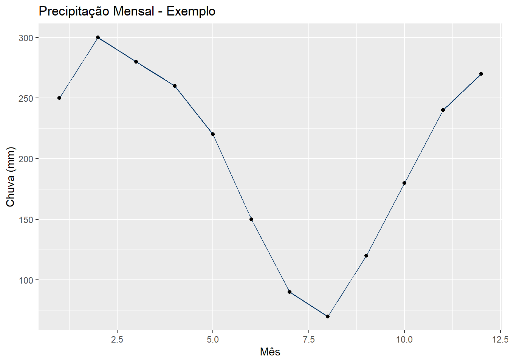
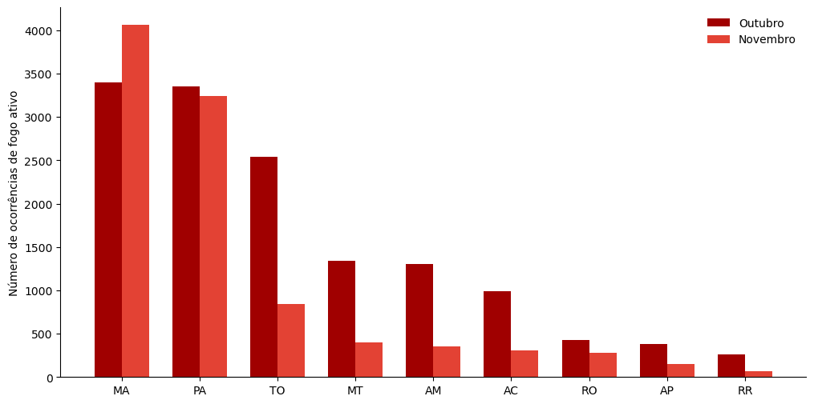
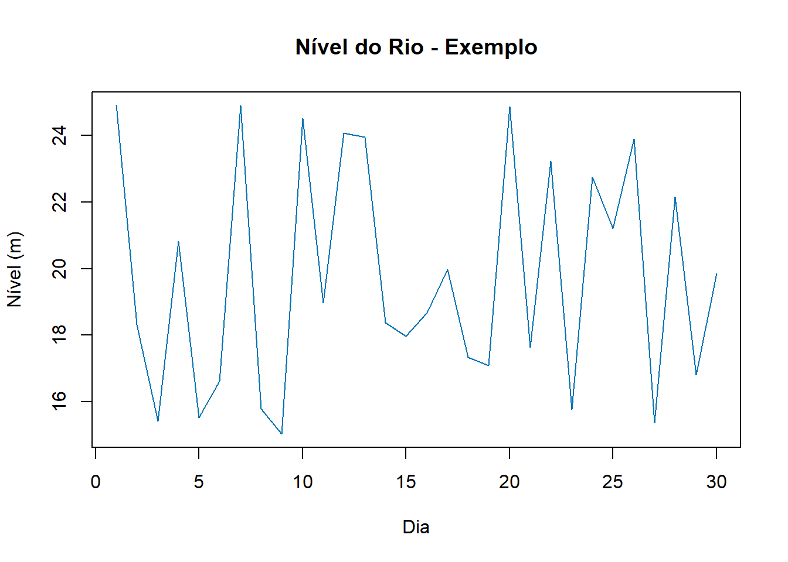

1 Bem-vindos
Este é o portifólio das atividades desenvolvidas pela Coordenadação Operacional de Manaus (COPER-MN) do Centro Gestor e Operacional do Sistema de Proteção da Amazônia (CENSIPAM).
A COPER reúne os núcleo de:
🌦 Meteorologia
🔥Painel do Fogo
🌊Hidrologia
🛰 Sensoriamento Remoto
2 Missão
Monitorar, analisar e gerar produtos técnicos estratégicos para apoio à tomada de decisão na Amazônia Legal.
3 Meteorologia
Disponibiliza informações meteorológica através do Painel da Meteorologia com informações detalhadas para a Amazônia Legal. Por meio da integração de modelos numéricos, dados de satélites e sensores meteorológicos, o portal fornece previsões do tempo, tendências climáticas e alertas para apoiar a tomada de decisão em diferentes setores.
A plataforma é essencial para a gestão de riscos ambientais, permitindo o monitoramento de eventos meteorológicos extremos, como tempestades severas, ondas de calor e frentes frias.
3.1 Atividades desenvolvidas
Monitoramento de precipitação
Análise de eventos extremos
Boletins técnicos
## Exemplo de Produto
3.2 Link de acesso
4 Painel do Fogo
A plataforma do Painel do Fogo disponibiliza informações em tempo quase real sobre o monitoramento do uso do fogo (queimadas e incêndios) em todo o território brasileiro e nos países da Organização do Tratado de Cooperação Amazônica (OTCA: Bolívia, Brasil, Colômbia, Equador, Guiana, Peru, Suriname e Venezuela).
Combinando dados de diferentes satélites, o Painel do Fogo informa o ‘perímetro’ e o ‘status’ mais recente de ocorrência de fogo através da análise de focos de calor e de eventos de fogo, permitindo a associação das ocorrências e subsidiar o acionamento de brigadas ou batalhões.
A plataforma também prioriza eventos por indicadores comparativos e oferece consciência situacional com dados ambientais e imagens ópticas, auxiliando na definição de estratégias de combate ao fogo com filtros por estado e município.
4.1 Atividades desenvolvidas
Monitoramento de Eventos de Fogo
Análise de eventos extremos
Boletins técnicos
## Exemplo de Produto
4.2 Link de acesso
https://panorama.sipam.gov.br/painel-do-fogo/index.html
5 Hidrologia
Disponibiliza informações de monitoramento e previsão de condições hidrometeorológicas na Amazônia Legal em tempo quase real pela plataforma web. Através da integração de dados, hardware e softwares, a plataforma fornece informações valiosas para prevenir impactos de eventos naturais extremos em áreas urbanas, apoiando a tomada de decisão e o planejamento preventivo através do sistema SipamHidro.
5.1 Atividades desenvolvidas
Monitoramento e alertas de:
Níveis dos rios;
Reservatórios U.H.E;
Descargas elétricas;
Cheia e vazante.
Integração com dados meteorológicos
-
## Exemplo de Produto

6 Sensoriamento Remoto
Monitoramento de áreas antropizadas com presença de atividades ilícitas por meio do sensoriamento remoto para subsidiar ações de geointeligência, como a metodologia de Localização de Garimpos (LOGAR) e de Pistas de Pouso (LOPIS). Esses ativos de Inteligência Tecnológica são utilizados para detectar, identificar, analisar e monitorar as atividades de extração mineral ilegal e de campos de pouso irregulares. Além de outros ilícitos (narcotráfico, tráfego aereo desconhecido, pirataria fluvial e pesca ilegal para órgãos de fiscalização, segurança pública e forças armadas possibilitando um direcionamento para o combate às atividades ilícitas na Amazônia Legal.
6.1 Atividades desenvolvidas
Processamento de imagens;
Quantificação da área mapeada e analisada;
Identificação de ilícitos ambientais;
Geração de mapas temáticos
6.2 Link da plataforma
7 Capacitações integradas
Capacitação voltada para análise de dados integrados geoespacial e meteorológico para o monitoramento ambiental.
- Uso das Plataformas do Painel da meteorologia, Painel do Fogo e SipamHidro.
- Integração Fogo-Clima: Associação de ocorrência de fogo com base em dados meteoroogicos
- Modelagem Hidrológica (SipamHidro): Cruzamento de dados de precipitação e monitoramento de níveis de rios para a previsão de cheias;
- Sensoriamento Remoto: utlização de imagens e vetores para análises espaciais dos dados geoespacial integrados e meteorológico;
- Curso de QGis e outras ferramentas de análises geoespaciais.
8 Eventos
8.1 Reunião Climática 2026
Data: 27 de fevereiro de 2026
Local: Censipam de Porto Velho
Formato: Presencial e Virtual
8.2 Pré-Cheia: Prognostico para 2026
Data: 05 de março de 2026
Local: Censipam de Porto Velho
Formato: Presencial e Virtual
8.3 4º Seminário do Painel do Fogo e 2ºEncontro Operacional de 2026
Data: 06 a 10 de julho de 2026
Local: Censipam - Manaus
Formato: Presencial e Virtual
8.4 Pré-Seca: Prognostico para 2026
Data:
Local:
9 Contato
Email institucional
Telefone institucional
Recomeçar
Adaptar o visual para ficar mais institucional (cores oficiais do CENSIPAM) e Ir para PASSO 3 — Publicar no GitHub Pages